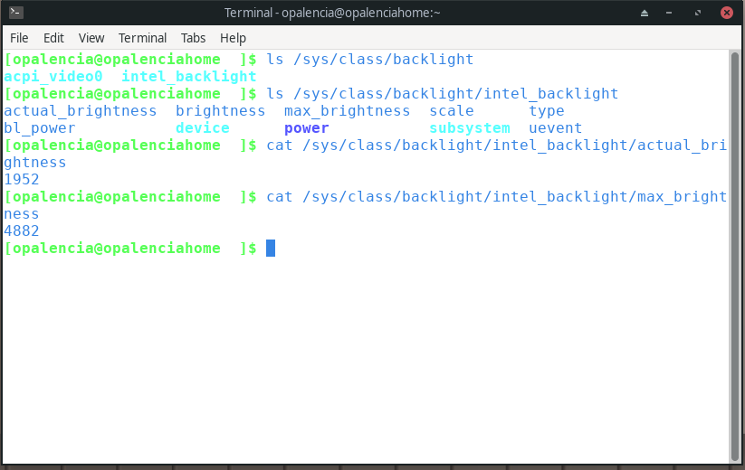
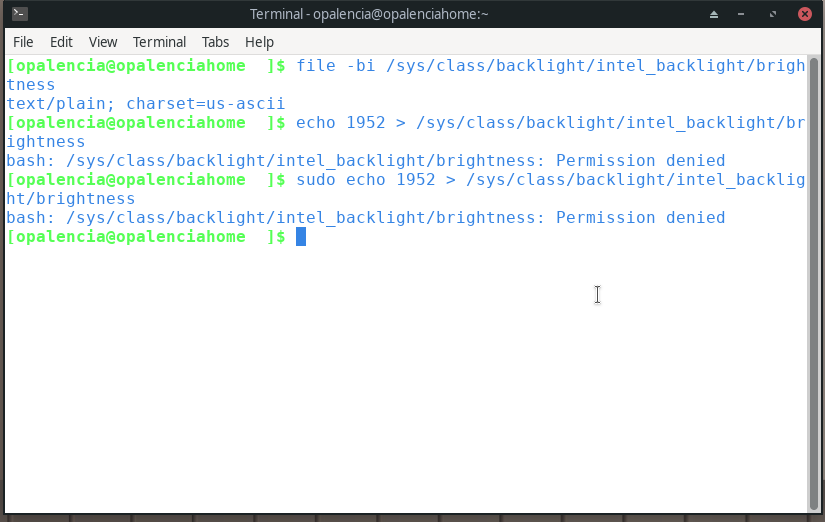
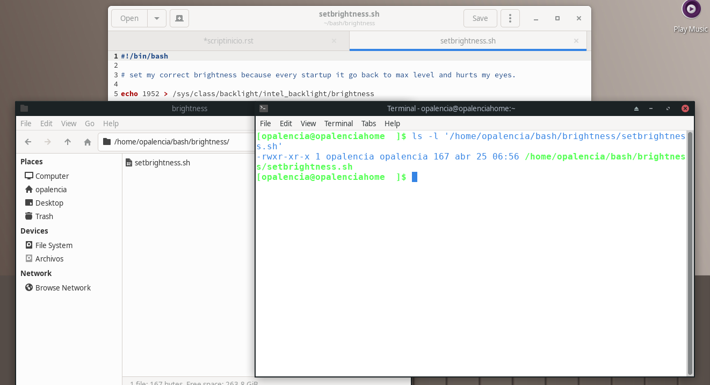
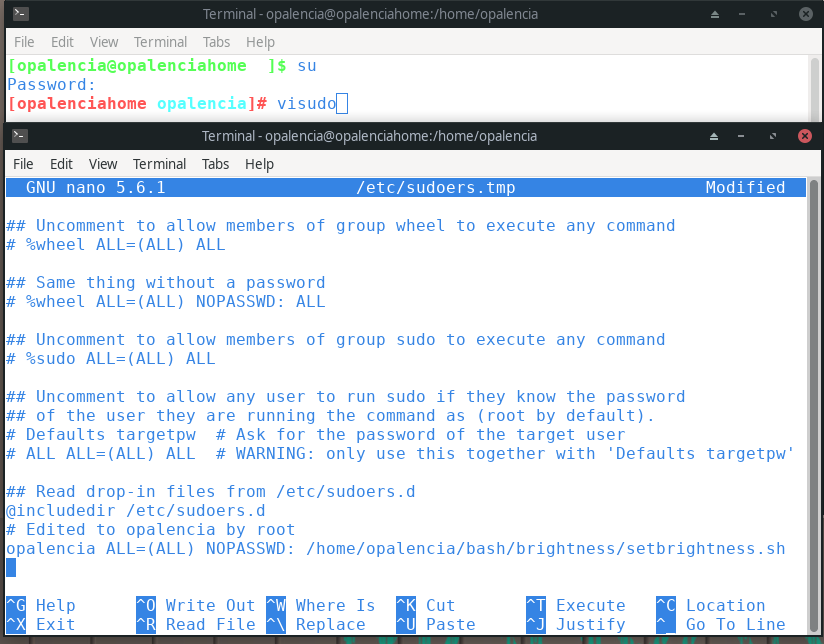
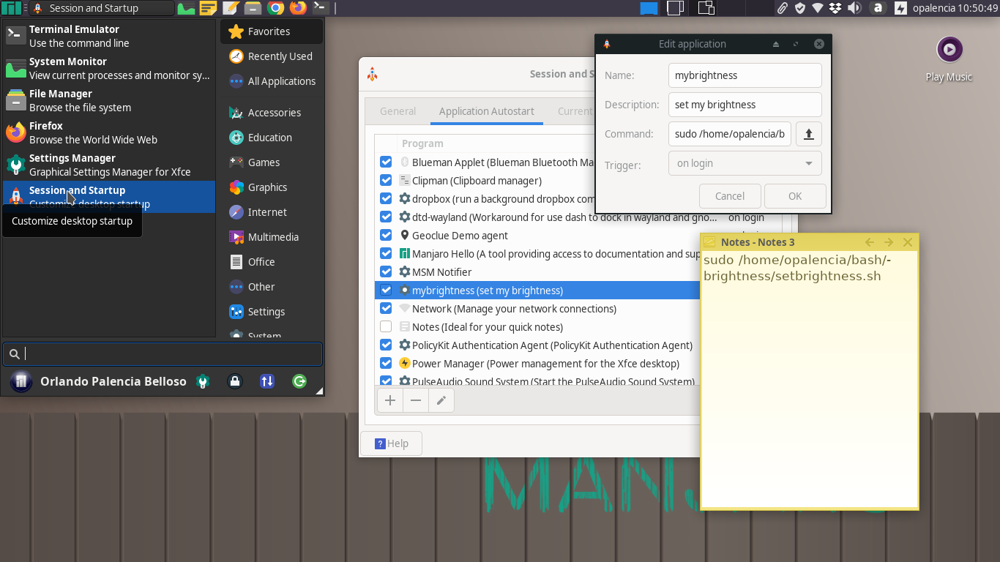

Ejecutar script al iniciar sesión con sudo¶
Problema a resolver
Instalé Manjaro en mi sony vaio viejita y resulta que cada vez que inicio sesión el brillo de mi pantalla se reestablece al 100%, lo cual me genera problemas en la vista y no quiero estar cambiando ese brillo cada vez que enciendo mi laptop. Cada distro es diferente y cada modelo y marca de laptop tienen características distintas también; por lo tanto, siempre habrá problemillas como estos ya que el kernel de linux (el cual controla los componentes de hardware de un dispositivo) no puede resolver todo este asunto de compatibilidad con todos los dispositivos existentes y por haber. Pero la solución es sencilla, la cual escribo a continuación.
Aclaración En mi caso las teclas de mi teclado y la aplicación de “Power Manager” de mi entorno de escritorio Xfce para controlar el brillo funcionan perfectamente y puedo cambiarlo a mi gusto con estos métodos. Por eso le llamo problemilla, solo tengo ese defecto que me lo cambia al máximo cada vez que inicio mi laptop.
Si alguien tiene problemas y no puede cambiar el brillo de su laptop, aqui pueden encontrar alguna solución.
https://wiki.archlinux.org/index.php/Backlight
Procedimiento para cambiar el brillo de una sony vaio por medio de un script:
Paso 1: Identificar mi tarjeta de video
$ lspci | grep Grap
$ inxi -Gx
Paso 2: Mostrar los valores actuales del brillo segun mi tarjeta
$ ls /sys/class/backlight, como mi tarjeta decía intel, haría los cambios en “intel_backlight”
cat /sys/class/backlight/intel_backlight/actual_brightness
cat /sys/class/backlight/intel_backlight/max_brightness
cat /sys/class/backlight/intel_backlight/brightness
éste es el brillo actual y máximo y el actual es el que me interesa que se guarde permanentemente (para ello cambiaría el valor del archivo de texto “brightness”, “actual_brightness” no se toca). En mi caso aparecen números desde el cero al 4882 y el número que me interesa guardar es 1952.
Paso 3: Guardar el número de brillo deseado en el archivo de texto “brightness”
echo 1952 > /sys/class/backlight/intel_backlight/brightness
como se aprecia en la imagen este archivo solo lo puede modificar el usuario “root”, aunque mi usuario pertenezca al grupo de sudo, no puedo modificar dicho archivo.
Paso 4: Crear un script para modificar el valor del brillo contenido en el archivo de texto “brightness”
#!/bin/bash
# set my correct brightness because every startup it go back to max level and hurts my eyes.
echo 1952 > /sys/class/backlight/intel_backlight/brightness
recordar guardar dicho escript con el nombre “setbrightness.sh” y asignarle permisos de ejecución con “chmod +x setbrightness.sh”. Recomiendo guardar dicho escript en una carpeta del usuario actual, esta es mi ruta: /home/opalencia/bash/brightness/setbrightness.sh
Paso 5: Agregar una regla al archivo “/etc/sudoers” con el comando “visudo” con el usuario “root” (hay que abrir una terminal e ingresar las credenciales del usuario root), la cual permitirá guardar el brillo en el archivo “brightness” con el escript arriba creado y para el usuario ahi mencionado. Ver la imagen de abajo por si alguien no está familiarizado a usar el usuario root y el comando visudo.
opalencia ALL=(ALL) NOPASSWD: /home/opalencia/bash/brightness/setbrightness.sh
“opalencia” es el usuario que deseo que ejecute el script y le doy la ruta en dónde se encuentra dicho script, “NOPASSWD” permite que el usuario ahí mencionado pueda ejecutar el script sin necesidad de escribir la contraseña en ningún lado. Asegurarse que el usuario sea el mismo que inició sesión y la ruta del script sea la correcta, de no ser así, el brillo no cambiaría y no serviría para nada el scritp.
Paso 6: Agregar el script a las aplicaciones de inicio de sesión
Mi entorno de escritorio es Xfce version 4.16, cada entorno de escritorio tiene diferentes rutas de dónde es que se agregan las aplicaciones de inicio de sesión. En mi caso entro a “session and startup” y ahí hay una pestaña de “Application Autostart” y luego hago clic en el símbolo mas para agregar una aplicación, le agrego nombre, una descripción y el comando que ejecutará el cual será la dirección al scritp antes creado, pero antes anteponerle “sudo”, ver la imagen de abajo para mayor claridad.
sudo /home/opalencia/bash/brightness/setbrightness.sh
esto es lo mas importante y se agrega donde dice “command”, como dice la etiqueta “command” aquí se inserta el comando que deseamos que se ejecute cada vez que se inicia la sesión en nuestra laptop. Es muy importante no agregar nada raro sino que solo el comando o en este caso el “sudo” mas la dirección en donde guardamos nuestro script.
De esta manera si el brillo se resetea cada vez que apago mi laptop, entonces con este escript volverá al valor que deseo cada vez que inicio mi laptop, sin necesidad de cambiarlo manualmente ni hacer ya mas nada sino que solo me tomaría la molestia de realizar esta actividad una única vez.